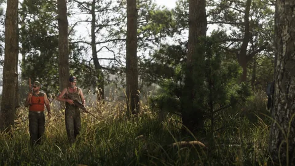

El dinero
Atracos a comercios
Importe publicado: ninguno
Dinero en efectivo y un botín que revender; ninguna cantidad. 6
OficialVer la ficha
Actividades secundarias · GTA VI
Pescar, cazar, bucear, atracar una tienda de conveniencia o robar un coche: todo lo que Rockstar ha mostrado o anunciado al margen de la historia, con lo que da cuando se ha publicado.
Cada actividad dice de dónde sale: texto de Rockstar, imagen oficial o anotaciones de jugadores. Hasta hoy no se ha publicado ninguna cantidad: el sitio no se inventa ninguna. Entender los estados.
Las fichas
Una ficha por cada actividad de la que Rockstar ha dicho o mostrado lo suficiente: qué es, dónde practicarla, qué hace falta y lo que da.
Crimen y dinero Crimen y dinero
Crimen y dinero Naturaleza, agua y deporte
Naturaleza, agua y deporte Naturaleza, agua y deporte
Naturaleza, agua y deporte Naturaleza, agua y deporte
Naturaleza, agua y deporte Naturaleza, agua y deporte
Naturaleza, agua y deporte Naturaleza, agua y deporte
Naturaleza, agua y deporteTodas las actividades
Una línea por actividad, con su estado y sus fuentes. Cuando otra página del sitio ya la trata, la línea remite a ella.
Mostrar
Actividades mostradas: 29

Crimen y dinero · Oficial
Tiendas de conveniencia, gasolineras, tienda de licores: Rockstar muestra atracos desde el Tráiler 1, y Rob Nelson confirma que se hacen en solitario o entre dos. 2623
Lugares localizados en nuestro mapa: no es una ubicación confirmada para la actividad.


Crimen y dinero · Visto en un medio
Un fotograma del Extended Look muestra a unos hombres enmascarados alrededor de un furgón abierto. Actividad libre o escena de la historia: nada lo indica. 4
Todavía no hay ningún lugar situado para esta actividad: nada se coloca al azar.


Crimen y dinero · Oficial
Los garajes tienen un escondrijo para el botín, que un perista de la zona compra por menos de lo que vale; la droga de las guaridas también acaba en sus manos. 86
Lugares localizados en nuestro mapa: no es una ubicación confirmada para la actividad.
Naturaleza, agua y deporte · Oficial
Rockstar presenta Mount Kalaga como un lugar de pesca; Rob Nelson promete una pesca tan completa como en Red Dead Redemption 2, con las piezas devueltas al agua. 114
Lugares localizados en nuestro mapa: no es una ubicación confirmada para la actividad.

Naturaleza, agua y deporte · Oficial
Más de 170 especies anunciadas, algunas raras, por descubrir o legendarias, a las que se puede seguir el rastro. 17
Lugares localizados en nuestro mapa: no es una ubicación confirmada para la actividad.


Naturaleza, agua y deporte · Oficial
El reportaje de Game Informer menciona excursiones entre las citas de Jason y Lucia. 19
Lugares localizados en nuestro mapa: no es una ubicación confirmada para la actividad.

Naturaleza, agua y deporte · Visto en un medio
Jason juega al baloncesto delante de su escondite en el Extended Look; una captura muestra también a transeúntes en una cancha de Vice City. 243
Lugares localizados en nuestro mapa: no es una ubicación confirmada para la actividad.

Naturaleza, agua y deporte · Visto en un medio
Hacia el 18:31 del Extended Look, una prueba de tiro cronometrada con pistola y con arma automática. 24
Lugares localizados en nuestro mapa: no es una ubicación confirmada para la actividad.


Ciudad, noche y estilo · Oficial
Talleres de la Edición Ultimate, Pay ’n’ Spray para el color, taquillas de Ammu-Nation: todo está en la página de personalización. 75
Lugares localizados en nuestro mapa: no es una ubicación confirmada para la actividad.

Ciudad, noche y estilo · Oficial
Un encargo de la Edición Ultimate: encontrar coches clásicos abandonados y ponerlos en buen estado. 5
Todavía no hay ningún lugar situado para esta actividad: nada se coloca al azar.

Ciudad, noche y estilo · Visto en un medio
Un feed de red social aparece en pantalla en el Tráiler 1; lo que se puede hacer en él no se ha publicado. 2
Todavía no hay ningún lugar situado para esta actividad: nada se coloca al azar.

Ciudad, noche y estilo · Visto en un medio
Jason delante de anuncios paródicos, en el Extended Look. 25
Todavía no hay ningún lugar situado para esta actividad: nada se coloca al azar.
El mapa
Elige una actividad: sus lugares se iluminan en el mapa de Leonida. Son lugares localizados en nuestro mapa, nunca una ubicación inventada; una actividad sin lugar publicado lo indica.
29 actividades
Sin resultados.

Ciudad, noche y estilo
Club de striptease
Dónde encontrarla: Lugares localizados en nuestro mapa
Lugares de nuestro mapa vinculados a esta actividad: Jack of Hearts, Delights.
El dinero
Rockstar describe mecánicas, nunca cantidades. Esto es lo que se ha publicado, actividad por actividad.
Hacer mis cálculosEl dinero
Importe publicado: ninguno
Dinero en efectivo y un botín que revender; ninguna cantidad. 6
OficialVer la ficha
El dinero
Importe publicado: ninguno
Dinero o droga, estimados en el mapa antes de entrar; ninguna cifra. 6
OficialVer la actividad
El dinero
Importe publicado: ninguno
Se revenden al perista; el Pay ’n’ Spray da su valor. Ninguna cantidad. 7
OficialVer la ficha
El dinero
Importe publicado: ninguno
El perista los compra con un descuento cuyo porcentaje no se ha publicado. 8
OficialVer la actividad
El dinero
Importe publicado: ninguno
Dinero al revender lo que se consigue; ninguna cantidad. 15
OficialVer la ficha
El dinero
Importe publicado: ninguno
Nada que revender: las piezas se sueltan. Con desafíos y coleccionables como premio. 14
OficialVer la ficha
El dinero
Importe publicado: ninguno
Nada de dinero: músculo y fuerza. 22
OficialVer la ficha
El dinero
Importe publicado: ninguno
Cuestan dinero; ninguna tarifa publicada. 25
Visto en un medioVer la actividad
El dinero
Importe publicado: ninguno
Coches clásicos restaurados; ninguna suma anunciada. 5
OficialVer la actividad
Rob Nelson avisa también de que a veces la historia espera a que hayas reunido suficiente dinero: para eso sirven las actividades secundarias. Rockstar no ha publicado ninguna ganancia ni ninguna duración de misión: las actividades de la calculadora son ejemplos que puedes cambiar por tus cifras. 27
Fuentes oficiales
Las actividades secundarias han ido llegando poco a poco: una escena de tráiler, una página de región, un texto de edición, una demostración y luego un reportaje de revista.
El dúo atraca una tienda de licores, con la cara tapada, antes de huir.

Jason y Lucia surcan el agua en moto de agua; la página de Mount Kalaga promete caza, pesca y pistas todoterreno.

Garajes con un escondrijo para el botín, una guarida de banda que saquear y coches de Wyman que restaurar.

Gimnasio, baloncesto, campo de tiro, carreras nocturnas, robo de coches y atracos a gasolineras.

Rob Nelson detalla los atracos, los peristas y los coches de lujo protegidos con alarma y localizador.

Una pesca sin reventa y una caza que da dinero: las palabras de Rob Nelson, recogidas por el creador TGG, invitado a Rockstar North.

El reportaje de la revista enumera las actividades confirmadas y anuncia más de 170 especies animales.

Una actividad “vista” viene de una imagen o de un vídeo oficial: nada dice todavía cómo se juega.
Observaciones de los jugadores
Los jugadores localizan los lugares y los detalles de los avances. Esto es lo que plantean, citado como tal.
Estas pistas se quedan fuera de la calculadora y de las fichas mientras Rockstar no las confirme.
Preguntas abiertas
La lista ya es larga; le faltan sobre todo las cifras y las reglas del juego.
No se ha publicado ninguna cantidad: ni botín, ni premio de carrera, ni precio de reventa.
Nunca anunciados. Unas pistas de tenis y un campo de golf figuran en el mapa de los jugadores, sin que se diga que se pueda jugar en ellos.
Taxi, grúa, repartos, cazarrecompensas: ninguna mención en las fuentes consultadas.
Nada anunciado: solo se describen los escondites y los garajes.
Citados en crónicas o visibles al fondo de una captura, sin confirmación.
Vistos en los vídeos; nada dice que se pueda participar.
El saqueo de la guarida de los PTT Youngin$ y la restauración de los coches de Wyman forman parte de la edición; no se dice si se puede acceder a ellos sin ella.
Cada respuesta se sumará a la lista de actividades, con su fuente, en cuanto Rockstar la publique.
Herramientas del sitio
Mientras llegan las cifras, compara tus actividades, localiza los lugares y encuentra lo que otras páginas ya detallan.
Cada ficha de actividad tiene su propio recuadro de la calculadora, con la pregunta que le corresponde.
Preguntas
Las preguntas que se escriben en un buscador, con respuestas cortas y fechadas.
31 fuentes consultadas
Cada actividad y cada frase de esta página remite a una fuente con fecha. Las páginas se consultaron el 4 de octubre de 2026 a través de un buscador: ese día no se podían abrir directamente desde nuestro taller.
Página o vídeo publicado por Rockstar (web de GTA VI, Newswire, tráileres, Extended Look), o declaraciones de un responsable de Rockstar recogidas por un medio identificado, con la fecha.
Lo que muestra una imagen o una secuencia oficial sin que Rockstar lo diga en un texto: un plano de tráiler, una captura, un momento del Extended Look, con el minuto exacto cuando se conoce.
Relación establecida por jugadores, una wiki o un sitio de fans (lugar real, actor, condado). Se cita como tal, nunca se presenta como confirmada.
Pregunta sin respuesta publicada: precio, compra, acceso, papel en la historia. La anotamos para no tener que adivinarla.
La página de Mount Kalaga National Park lo presenta como un terreno de caza de primera, de pesca y de pistas todoterreno.
El atraco a la tienda de licores (Tráiler 1), la moto de agua de Jason y Lucia y el club de Boobie (Tráiler 2).
Las capturas de esta página: pesca, cazadores, kayak, buceo, hidrodeslizador, gimnasio, todoterreno, minigolf, billar, bares.
La demostración de unos 26 minutos: gimnasio, baloncesto, campo de tiro, carreras, robo de coche, atracos, furgón blindado.
La guarida de los PTT Youngin$ que saquear, la colección de coches clásicos de Wyman, las tiendas y los talleres de la edición.
Atracos en solitario o entre dos, joyerías y bancos pequeños mejor vigilados, guaridas señaladas en el mapa, peristas, coches de lujo con alarma y localizador.
La misma entrevista en inglés: cámaras de vigilancia que destruir, valor de reventa que da el Pay ’n’ Spray, tiendas y salones.
Recoge los textos de las ediciones: cada garaje tiene un escondrijo para los objetos robados, que un perista local compra por debajo de su valor.
El garaje de Shore Court: taquilla de armas y depósito para el perista.
El escondite de Jason, con su kayak Crest y su Dinka Enduro, y los garajes de las ediciones.
Rob Nelson: algunos coches aparcados siguen cerrados mientras no tengas las herramientas para entrar.
Las mismas palabras de Rob Nelson sobre las herramientas que hay que conseguir para algunos coches.
Hacia el 6:05 del Extended Look: la elección entre slim jim y ventanilla rota; los coches recientes necesitan un clonador de llaves.
Rob Nelson a TGG: las piezas siempre se sueltan; la pesca lleva a desafíos, coleccionables y momentos de la historia.
Palabras de Rob Nelson, citadas de forma indirecta: pesca sin reventa, caza que da dinero.
La crónica de TGG: la caza da dinero al revender lo que se consigue, y pasa por un personaje al que Jason conoce.
Más de 170 especies; algunas, raras, por descubrir o legendarias, se pueden rastrear.
La lista del reportaje de Game Informer: base jump, billar, gimnasios, kayak, minigolf, buceo, carreras callejeras y todoterreno, zoos, hidrodeslizador y moto de agua.
La misma lista, con las excursiones entre las citas de Jason y Lucia.
Rob Nelson: la comida influye en el peso de Jason y Lucia, y el deporte desarrolla sus músculos a la vista.
Las mismas palabras de Rob Nelson sobre el peso y los músculos.
Rob Nelson: gimnasios donde se entrena para ganar músculo y fuerza; el artículo también habla de abonos.
Lucia haciendo press de banca, pulsando al ritmo; atracos a gasolineras, con bandana en la cara.
El baloncesto delante del escondite de Jason, el campo de tiro cronometrado, el arma escondida de Lucia antes de entrar en una tienda.
Carreras nocturnas, motos, stock car y rally, base jump, televisión, club de striptease donde se gasta dinero.
El atraco a la tienda de licores del Tráiler 1, hacia el 1:16.
Recoge la frase de Rob Nelson: habrá que ganar dinero fuera de las misiones para hacer avanzar la historia.
Mezcla palabras de Rob Nelson y detalles de avances: un perista por tipo de botín, escaneo de un coche antes del robo.
Según los avances, casi todas las tiendas se pueden atracar; ninguna confirmación de Rockstar.
Gimnasios, circuitos, zoo y tienda atracada situados en el mapa y relacionados con lugares reales; los nombres en el juego están por confirmar.
El creador TGG dice haber visto un modo foto, sin modo director; nada de Rockstar.
Lo que no hacemos. Ningún dato sacado de las filtraciones de 2022 o de 2026, ninguna actividad añadida sin fuente, ninguna cantidad adivinada. Los estados se explican en el Tutorial.
La calculadora
Las ganancias llegan con el juego. Escribe lo que daría un atraco, una carrera o una reventa, su duración y tu parte: la calculadora compara tus actividades por hora de juego.
¿Y después?
Cada ficha se completará con el juego: lo que hay, lo que se hace allí, lo que da. Hasta entonces, nada inventado.